@mm.machine.ru01 / 10
8ИИ-репозиториев,которыезнаеткаждыйразработчик
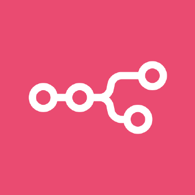
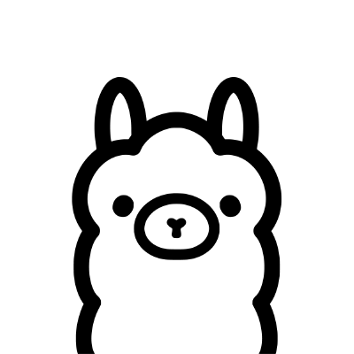
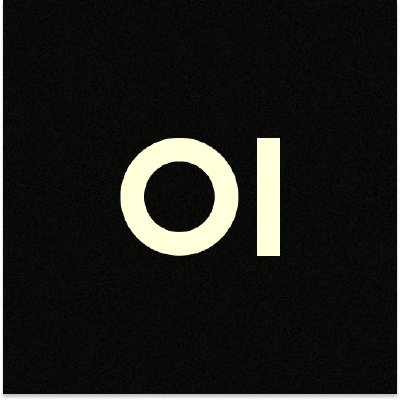
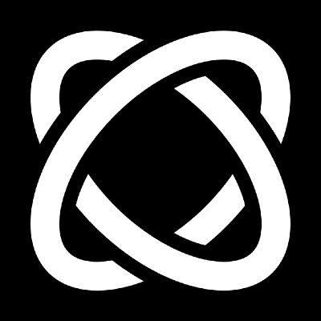

1,2 млнзвёзд на GitHub у этой восьмёрки 
@mm.machine.ru02 / 10
№ 1
n8n
github.com/n8n-io/n8n
Автоматизации и ИИ-агенты в визуальном редакторе. Можно поставить к себе бесплатно.
TypeScriptможно к себе на сервер
github.com/n8n-io/n8n
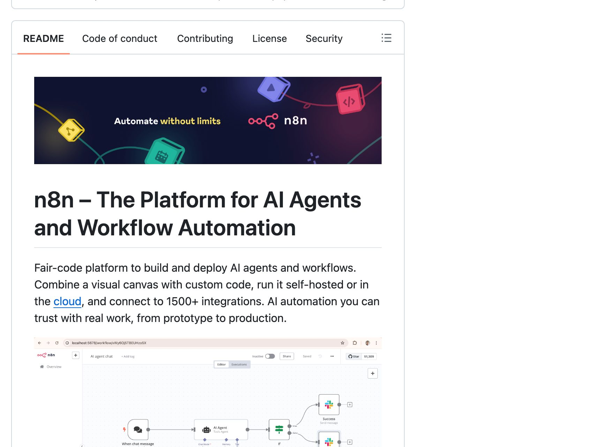
@mm.machine.ru03 / 10
№ 2
markitdown
github.com/microsoft/markitdown
Любой PDF, Word, Excel или презентацию в чистый текст для нейросети.
PythonMIT
github.com/microsoft/markitdown
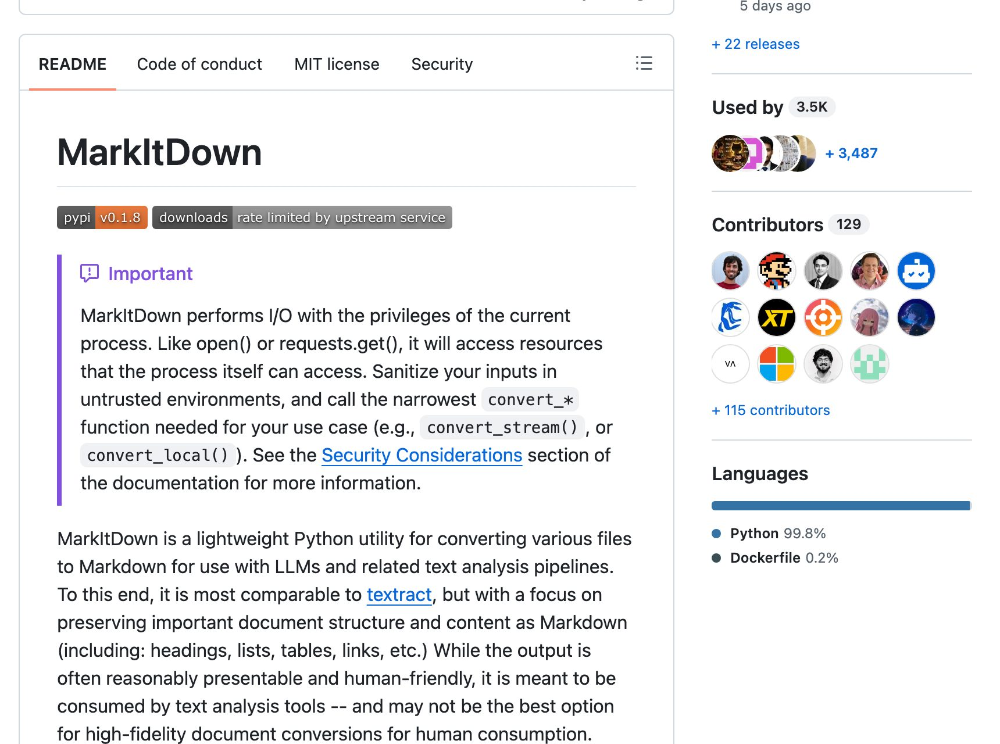
@mm.machine.ru04 / 10
№ 3
ollama
github.com/ollama/ollama
Запускай нейросети прямо на своём компьютере. Без подписки и без интернета.
GoMITбез интернета
github.com/ollama/ollama
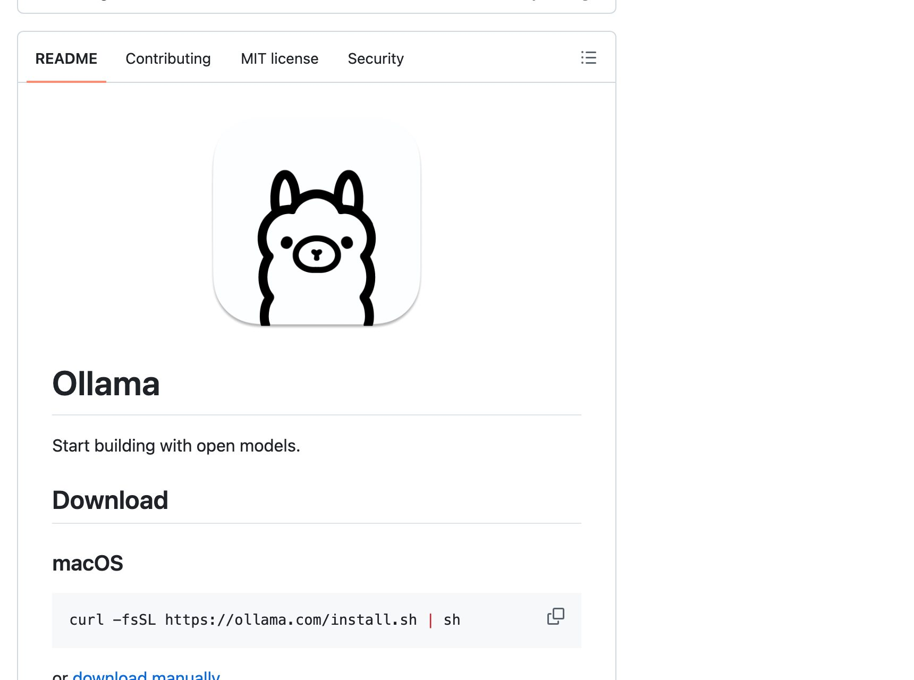

@mm.machine.ru05 / 10
№ 4
open-webui
github.com/open-webui/open-webui
Свой ChatGPT-подобный интерфейс для локальных и облачных моделей.
Pythonсвой сервер
github.com/open-webui/open-webui
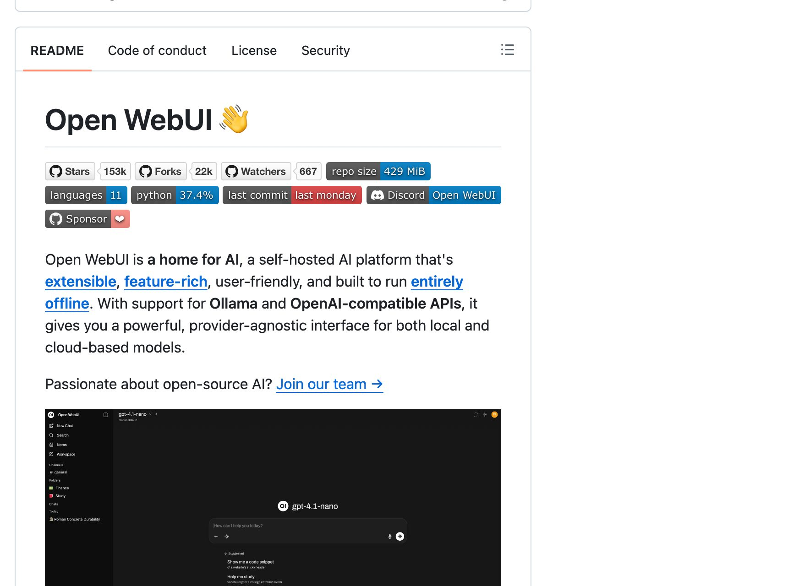
@mm.machine.ru06 / 10
№ 5
claude-code
github.com/anthropics/claude-code
Агент для кода от Anthropic. Работает в терминале.
терминалнужна подписка
github.com/anthropics/claude-code
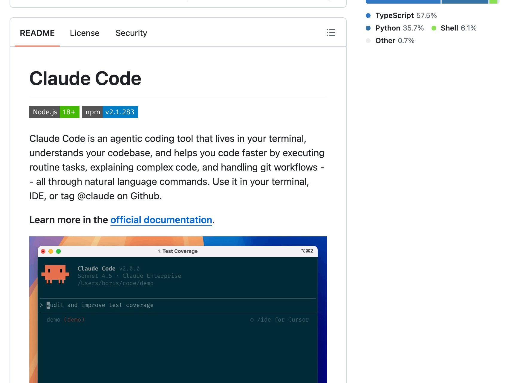
@mm.machine.ru07 / 10
№ 6
comfyui
github.com/Comfy-Org/ComfyUI
Генерация картинок и видео через схему из блоков.
PythonGPL-3.0
github.com/Comfy-Org/ComfyUI
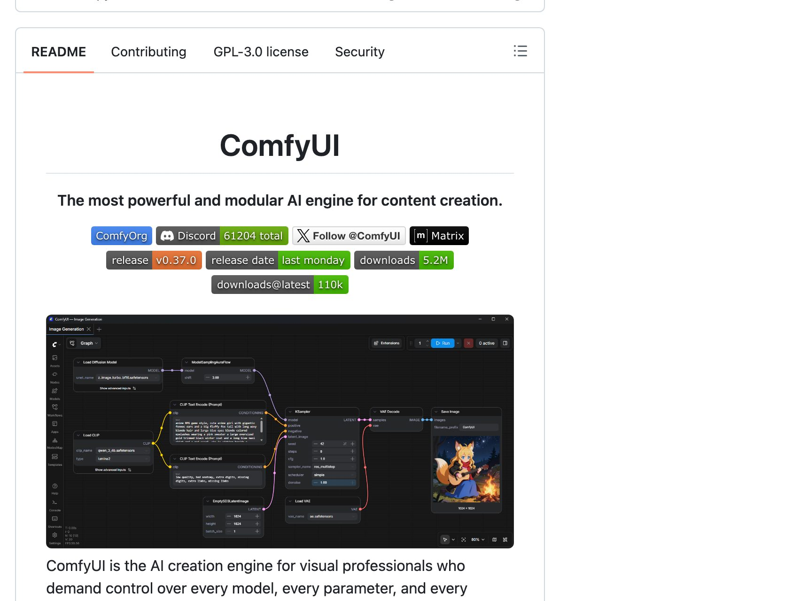

@mm.machine.ru08 / 10
№ 7
browser-use
github.com/browser-use/browser-use
ИИ-агент, который сам ходит по сайтам и нажимает кнопки.
PythonMIT
github.com/browser-use/browser-use
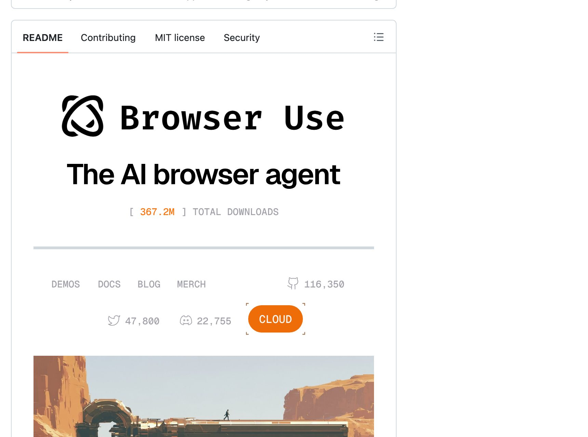
@mm.machine.ru09 / 10
№ 8
whisper
github.com/openai/whisper
Расшифровка речи в текст от OpenAI. Понимает русский.
PythonMITрусский
github.com/openai/whisper
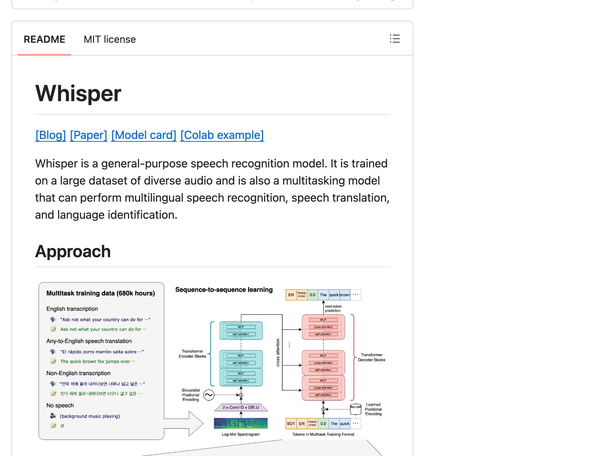
@mm.machine.ru10 / 10
звёзды на 26.09.2026
Сохрани рейтинг
8whisper110 тыс ИИшница@iishnitsa_nazavtrak
Напиши в комментариях
ИИШНИЦА